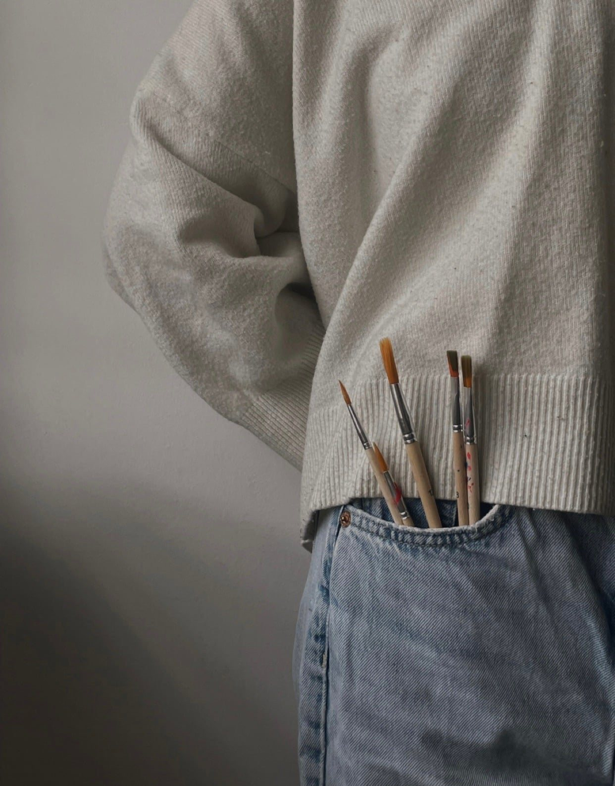

Wyjątkowe spotkanie, które łączy twórczą ekspresję z różnorodnymi doświadczeniami dla dłoni.
Podczas każdego spotkania odkryjesz inną formę tworzenia – od komponowania bransoletek i biżuterii, przez malowanie i prace artystyczne, aż po lepienie i ugniatanie mas plastycznych czy tworzenie obrazów dłońmi.
Różnorodne faktury, kształty i materiały angażują zmysł dotyku, wspierają sprawność dłoni, koncentrację i koordynację, a jednocześnie dają przestrzeń do swobodnego wyrażania siebie.
Tworzeniu towarzyszy spokojna rozmowa i przyjemna atmosfera, dzięki czemu spotkanie staje się okazją do aktywnego spędzenia czasu, rozwijania kreatywności, pobudzania zmysłów i czerpania radości z samego procesu tworzenia.
Każde spotkanie odkrywa inną formę tworzenia, dlatego dłonie za każdym razem poznają coś nowego.
POCZUJ - DOTKNIJ - STWÓRZ
